На рисунке изображён график функции y=f(x). На оси абсцисс отмечено девять точек: x1, x2, x3, x4, x5, x6, x7, x8, x9. Найдите количество отмеченных точек, в которых производная функции f(x) отрицательна.
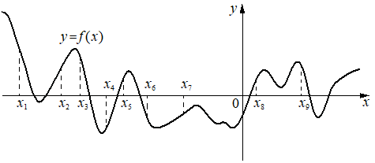На рисунке изображены график функции y=f(x) и касательная к нему в точке с абсциссой x0. Найдите значение производной функции f(x) в точке x0.
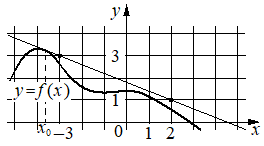На рисунке изображён график функции y=f(x). На оси абсцисс отмечено восемь точек: x1, x2, x3, x4, x5, x6, x7, x8. Найдите количество отмеченных точек, в которых производная функции f(x) положительна.
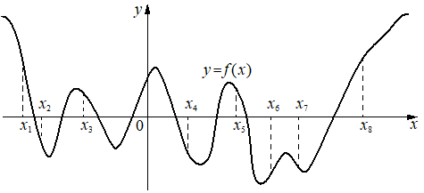На рисунке изображены график функции y=f(x) и касательная к нему в точке с абсциссой x0. Найдите значение производной функции f(x) в точке x0.
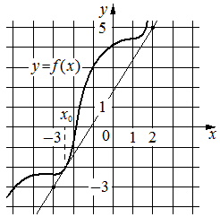На рисунке изображён график y=f'(x) — производной функции f(x), определённой на интервале (−19;3). Найдите количество точек экстремума функции f(x), принадлежащих отрезку [−17;−4].
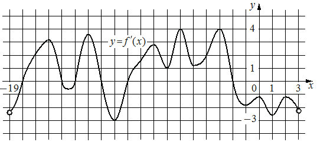На рисунке изображён график y=f'(x) — производной функции f(x), определённой на интервале (−9;4). В какой точке отрезка [−2;3] функция f(x) принимает наименьшее значение?
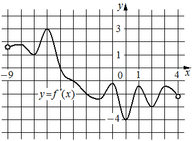На рисунке изображены график функции y=f(x) и касательная к нему в точке с абсциссой x0. Найдите значение производной функции f(x) в точке x0.
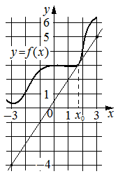На рисунке изображён график y=f'(x) — производной функции f(x), определённой на интервале (−4;8). В какой точке отрезка [−2;3] функция f(x) принимает наибольшее значение?
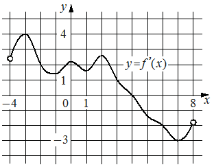На рисунке изображён график y=f'(x) — производной функции f(x). На оси абсцисс отмечено одиннадцать точек: x1, x2, x3, x4, x5, x6, x7, x8, x9, x10, x11. Сколько из этих точек принадлежит промежуткам убывания функции f(x)?
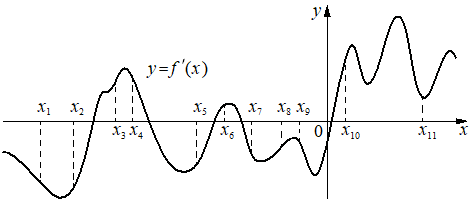На рисунке изображён график y=f'(x) — производной функции f(x). На оси абсцисс отмечено девять точек: x1, x2, x3, x4, x5, x6, x7, x8, x9. Сколько из этих точек принадлежит промежуткам убывания функции f(x)?
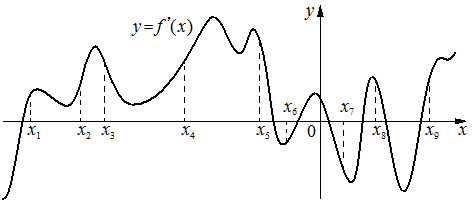На рисунке изображён график функции y=f(x). На оси абсцисс отмечены точки − 1, 2, 3, 4. В какой из этих точек значение производной наибольшее? В ответе укажите эту точку.
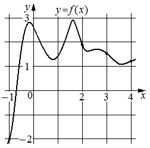На рисунке изображён график y=f'(x) — производной функции f(x). На оси абсцисс отмечено семь точек: x1, x2, x3, x4, x5, x6, x7. Сколько из этих точек принадлежит промежуткам убывания функции f(x)?
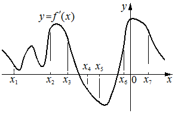На рисунке изображены график функции y=f(x) и касательная к нему в точке с абсциссой x0. Найдите значение производной функции f(x) в точке x0.
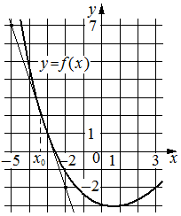На рисунке изображён график y=f'(x) — производной функции f(x). На оси абсцисс отмечено восемь точек: x1, x2, x3, x4, x5, x6, x7, x8. Сколько из этих точек принадлежит промежуткам возрастания функции f(x)?
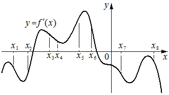На рисунке изображён график y=f'(x) — производной функции f(x), определённой на интервале (−20;4). Найдите количество точек экстремума функции f(x), принадлежащих отрезку [−16;1].
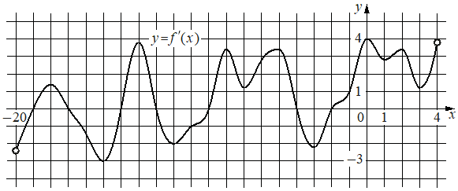На рисунке изображён график функции y=f(x), определённой на интервале (−10;3). Найдите количество корней уравнения f'(x)=0, принадлежащих отрезку [−7;2].
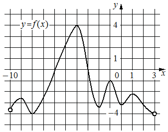На рисунке изображены график функции y=f(x) и касательная к нему в точке с абсциссой x0. Найдите значение производной функции f(x) в точке x0.
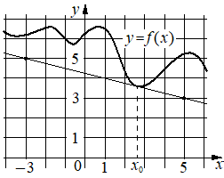На рисунке изображён график функции y=f(x). На оси абсцисс отмечено десять точек: x1, x2, x3, x4, x5, x6, x7, x8, x9, x10. Найдите количество отмеченных точек, в которых производная функции f(x) отрицательна.
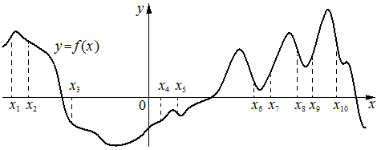На рисунке изображён график функции y=f(x). На оси абсцисс отмечены точки −2, −1, 3, 4. В какой из этих точек значение производной наименьшее? В ответе укажите эту точку.
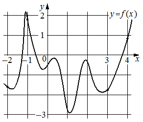На рисунке изображён график y=f'(x) — производной функции f(x), определённой на интервале (−4;8). Найдите точку экстремума функции f(x), принадлежащую отрезку [1;6].
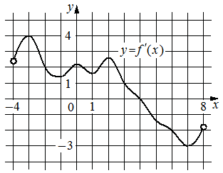На рисунке изображён график y=f'(x) — производной функции f(x), определённой на интервале (−5;14). Найдите количество точек минимума функции f(x), принадлежащих отрезку [−4;9].
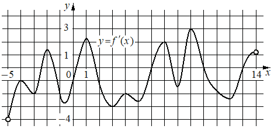На рисунке изображён график y=f'(x) — производной функции f(x), определённой на интервале (−15;5). Найдите количество точек максимума функции f(x), принадлежащих отрезку [−11;4].
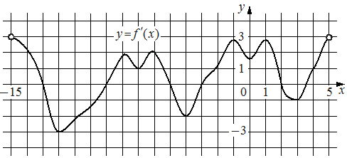На рисунке изображён график y=f'(x) — производной функции f(x). На оси абсцисс отмечено десять точек: x1, x2, x3, x4, x5, x6, x7, x8, x9, x10. Сколько из этих точек принадлежит промежуткам возрастания функции f(x)?
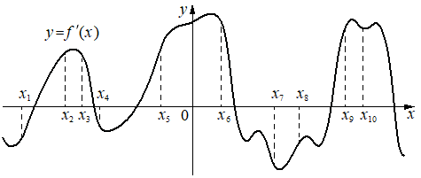На рисунке изображён график y=f'(x) — производной функции f(x), определённой на интервале (−10;7). Найдите количество точек минимума функции f(x), принадлежащих отрезку [−2;6].
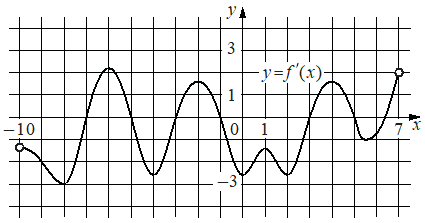На рисунке изображены график функции y=f(x) и касательная к нему в точке с абсциссой x0. Найдите значение производной функции f(x) в точке x0.
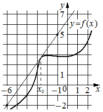На рисунке изображён график y=f'(x) — производной функции f(x), определённой на интервале (−12;12). Найдите количество точек максимума функции f(x), принадлежащих отрезку [−6;11].
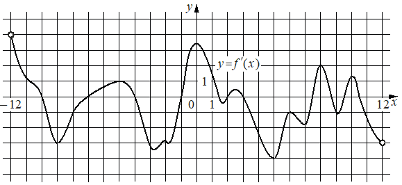На рисунке изображён график функции y=f(x), определённой на интервале (−5;4). Найдите корень уравнения f'(x)=0.
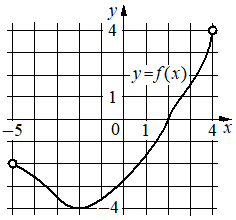На рисунке изображены график функции y=f(x) и касательная к нему в точке с абсциссой x0. Найдите значение производной функции f(x) в точке x0.
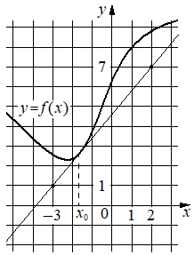На рисунке изображены график функции y=f(x) и касательная к нему в точке с абсциссой x0. Найдите значение производной функции f(x) в точке x0.
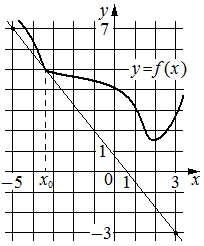На рисунке изображён график y=f'(x) — производной функции f(x), определённой на интервале (−5;5). Найдите точку максимума функции f(x).
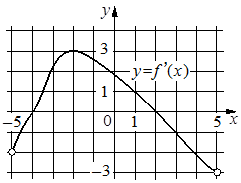На рисунке изображены график функции y=f(x) и касательная к нему в точке с абсциссой x0. Найдите значение производной функции f(x) в точке x0.
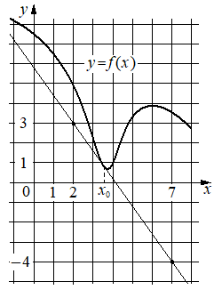На рисунке изображены график функции y=f(x) и касательная к нему в точке с абсциссой x0. Найдите значение производной функции f(x) в точке x0.
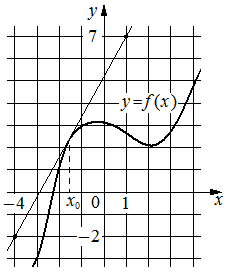На рисунке изображён график функции y=f(x). На оси абсцисс отмечены точки 1, 2, 3, 4. В какой из этих точек значение производной функции f(x) наименьшее? В ответе укажите эту точку
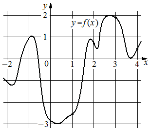На рисунке изображены график функции y=f(x) и касательная к нему в точке с абсциссой x0. Найдите значение производной функции f(x) в точке x0.
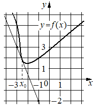На рисунке изображён график функции y=f(x). На оси абсцисс отмечены точки −2, 1, 3, 4. В какой из этих точек значение производной функции f(x) наибольшее? В ответе укажите эту точку.
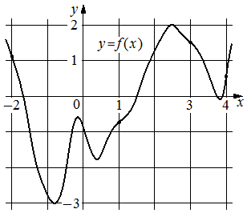На рисунке изображён график y=f'(x) — производной функции f(x), определённой на интервале (−12;11). Найдите количество точек максимума функции f(x), принадлежащих отрезку [−11;5].
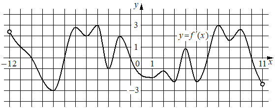На рисунке изображены график функции y=f(x) и касательная к нему в точке с абсциссой x0. Найдите значение производной функции f(x) в точке x0.
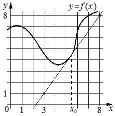На рисунке изображён график y=f'(x) — производной функции f(x), определённой на интервале (−6;5). В какой точке отрезка [−5;−2] функция f(x) принимает наименьшее значение?
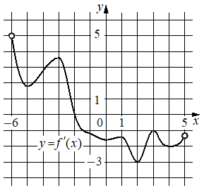На рисунке изображены график функции y=f(x) и касательная к нему в точке с абсциссой x0. Найдите значение производной функции f(x) в точке x0.
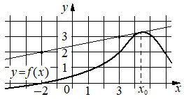На рисунке изображён график функции y=f(x). На оси абсцисс отмечено десять точек: x1, x2, x3, x4, x5, x6, x7, x8, x9, x10. В ответе укажите количество точек (из отмеченных), в которых производная функции f(x) отрицательна.
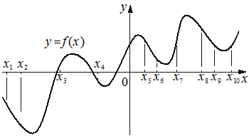На рисунке изображён график функции y=f(x). На оси абсцисс отмечено восемь точек: x1, x2, x3, x4, x5, x6, x7, x8. В ответе укажите количество точек (из отмеченных), в которых производная функции f(x) положительна.
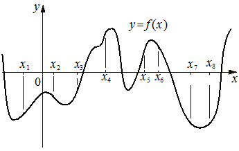На рисунке изображён график функции y=f(x). На оси абсцисс отмечено десять точек: x1, x2, x3, x4, x5, x6, x7, x8, x9, x10. Найдите количество отмеченных точек, в которых производная функции f(x) положительна.
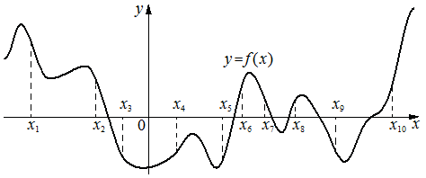